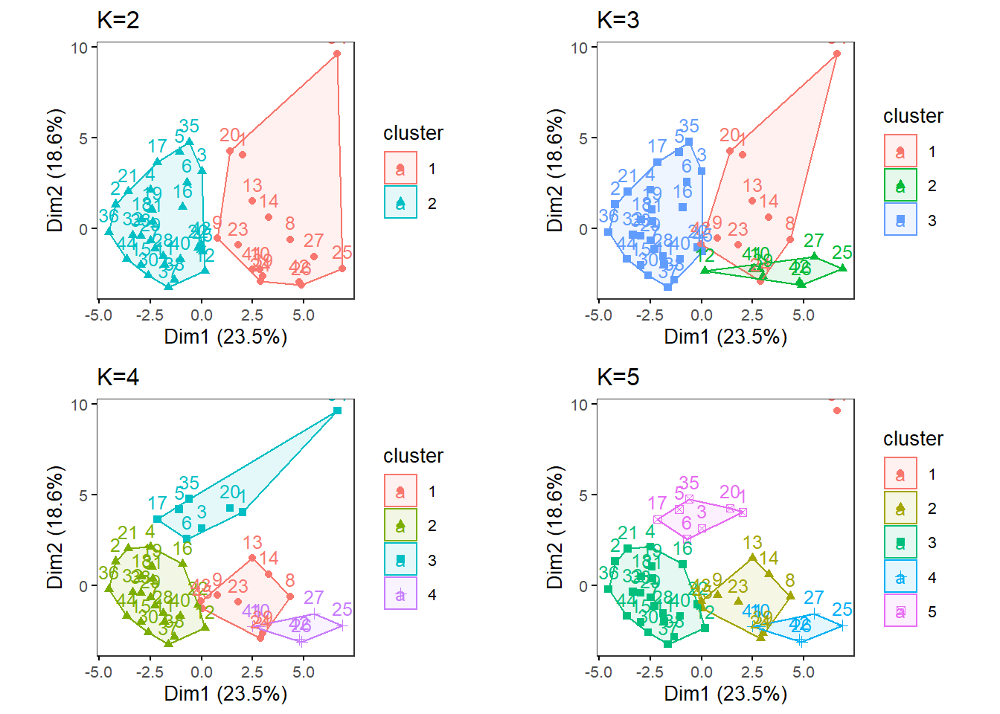

In this section, we are going to perform k-means analysis with the totals nutrients as is of the totals dataset, processed for clustering in the previous section.
Before proceeding, ensure to have four directories (folders) named as:
k-means analysis results will be saved in this folder. You can change those directory names, but if you do so, you will need to modify the directory name, res_dir_xxx_xxxx, to match your new directory name.
Name the path to DietR directory where input files are pulled.
main_wd <- "~/GitHub/DietR"Load the necessary functions
source("lib/specify_data_dir.R")
source("lib/k-means.R")You can come back to the main directory by:
setwd(main_wd)Specify the directory where the data is.
SpecifyDataDirectory(directory.name= "eg_data/VVKAJ/")Here, we will run k-means analysis for each of Nutrient as is, Nutrient average, Food categories as is, and Food categories average.
Load Nut_asis data.
Tot_m_QCed_Nut_asis <- read.table(file="VVKAJ_Tot_m_QCed_Nut_asis.txt", sep="\t", header=T)Scale your input file and name it as k-means_input.
kmeans_input <- scale(Tot_m_QCed_Nut_asis)Ensure your input file has the correct number of rows and columns.
dim(kmeans_input)## [1] 45 39Specify the directory (folder) to save the results.
res_dir_nut_asis = "kmeans_Nut_asis"Specify the prefix of filenames to be saved.
res_prefix_nut_asis = "VVKAJ_Nut_asis"Run the elbow, silhouette, and gap methods to find an optimum K (number of clusters). Do not alter the name of the input file: kmeans_input. This function below assumes that the input is named as kmeans_input.
You can only run those three methods for K = 1 through (number of observations - 1). The gap method output will be printed on the Console. The gap values are plotted in xxx_gapmethod.pdf.
ChooseK(out.dir= res_dir_nut_asis, out.prefix= res_prefix_nut_asis)## Loading required package: factoextra## Welcome! Want to learn more? See two factoextra-related books at https://goo.gl/ve3WBa## Clustering Gap statistic ["clusGap"] from call:
## clusGap(x = kmeans_input, FUNcluster = kmeans, K.max = k.values[length(k.values)], B = 50, nstart = 25)
## B=50 simulated reference sets, k = 1..14; spaceH0="scaledPCA"
## --> Number of clusters (method 'firstmax'): 14
## logW E.logW gap SE.sim
## [1,] 4.532233 4.845092 0.3128590 0.02310118
## [2,] 4.409759 4.732283 0.3225238 0.01897881
## [3,] 4.324036 4.651172 0.3271365 0.01891900
## [4,] 4.233090 4.585816 0.3527261 0.01871735
## [5,] 4.169099 4.529445 0.3603458 0.01940556
## [6,] 4.109745 4.478151 0.3684062 0.01798794
## [7,] 4.056901 4.430273 0.3733721 0.01727831
## [8,] 3.998079 4.384636 0.3865562 0.01756003
## [9,] 3.938530 4.339990 0.4014600 0.01792825
## [10,] 3.878824 4.296393 0.4175690 0.01828018
## [11,] 3.813557 4.253146 0.4395894 0.01793096
## [12,] 3.752867 4.209651 0.4567844 0.01755017
## [13,] 3.697967 4.166213 0.4682458 0.01796211
## [14,] 3.648997 4.122541 0.4735433 0.01767303This code will generate three output files all at once in the res_dir_xxx_xxxx:
| Output file postfix | File content |
|---|---|
| _elbowmethod.pdf | Shows total within−clusters sum of squares for each K. |
| _gapmethod.pdf | Shows the Gap statistic (k) for each K, and if the factoextra package is used, the optimal K is marked by a dotted line. |
| _silhouettemethod.pdf | Shows the Average silhouette width (~ goodness of fit) for each K, and if the factoextra package is used, the optimal K is marked by a dotted line. |
Look at the three figures generated by the ChooseK function above. The elbow and gap methods did not give a distinct peak, but the silhouette method gave a peak at K=3. K=2,4,5 also has relatively high silhouette width (~goodness of fit).
Gap method output (.pdf)
knitr::include_graphics("VVKAJ_Nut_asis_elbowmethod.pdf", error = FALSE)Image Title
With specific K values in mind, perform k-means analysis with one specified K. This will save Dim1 x Dim2 plot as a .pdf file in your out.dir. Change the filename as necessary.
OneK(myK= 3, out.dir= res_dir_nut_asis, out.fn = "VKAJ_Nut_asis_K3") oneKplotOr try multiple Ks and print the biplots in one panel. Likewise, This will save a Dim1 x Dim2 plot for each of the chosen K as a .pdf file in your out.dir. Change the filename to be saved as a PDF as necessary. This function uses the factoextra and gridExtra packages.
MultipleK(myKs = c(3,4,5,6), out.dir = res_dir_nut_asis, out.fn = "VKAJ_Nut_asis_K3-6")## Loading required package: gridExtra
k-means analysis can be performed in a similar way with the remaining Nut_ave, Cat_asis, and Cat_ave dataset. The R script has the codes to run k-means with those three datasets. But here they are omitted for brevity in this tutorial.
More detailed information about the gap and silhouette method can be found at: K-means cluster analysis, and determining the best number of clusters.
Come back to the main directory before you start running another script.
setwd(main_wd)